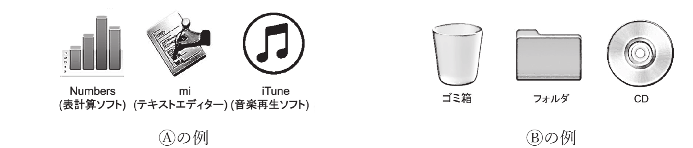

GUI/CUI、デスクトップメタファとアフォーダンス
ウインドウ・アイコン・メニューをマウスなどで操作する種類のUI。ウインドウ（Window）・アイコン（Icon）・ メニュー（Menu）・マウス（Mouse pointer）の頭文字からWIMPシステムとも呼ばれる。 感覚的にわかりやすい一方、大量のデータやファイルを一度に処理するのには不向きである。
ターミナルのような、全てを文字だけで行うタイプのUI。マウスを使わず、キーボード入力のみで操作する。 慣れないとわかりづらいが、操作の自動化により大量データの処理には便利である。
ファイル・フォルダ・ゴミ箱のアイコンをデスクトップ上に配置し、現実世界の卓上作業を模したデザインを デスクトップメタファという。ゴミ箱のアイコンが「中に不要なファイルを捨てられる」 という機能を直感的に伝えるように、モノの見た目・形状が使い方を示唆する性質をアフォーダンスという。
GUI/CUIの長所・短所自体は難しくない。記述問題では「直接操作」「現実世界」「類推」「アフォーダンス」 といった講義で使われた用語を的確に使えているかがポイントになる。
以下のGUIに関する問に答えよ．
(1) ゴミ箱にファイルをドラッグする操作を例に，GUIにおけるデスクトップメタファの利点を以下の語を 用いて3行程度で説明せよ．
直接操作 現実世界 類推
(2) アイコンのデザインには，Ⓐ作業の内容を表すものとⒷ実世界での実物を模したものがある．それぞれの タイプの表現は，多くの場合Ⓐはアプリケーションに，Ⓑはファイル，フォルダ，デバイスなどを表すのに 使われる．このような使い分けが効果的であると考えられる理由について，図記号による情報の表現と デスクトップメタファの両面から4行程度で考察せよ．

(1) デスクトップメタファは、ファイル削除という抽象的な操作を、現実世界のゴミ箱にモノを捨てる 行為になぞらえて表現している。ユーザは命令文を入力する代わりに、ファイルのアイコンを直接 ドラッグするという直接操作によって、現実世界での経験からの類推でその意味を直感的に理解でき、 操作方法を覚える負担が小さくて済む。
(2) アプリケーションは特定の実世界の道具に一対一で対応するとは限らず、「表計算」「音楽再生」 のような抽象的な機能を担うものが多いため、その機能を象徴的に表す図記号（実物の外見ではなく 内容・機能を表すパターン表現に近い記号的アイコン）の方が、何をするものかを的確に伝えやすい。 一方、ファイルやフォルダ、CDのような対象は、デスクトップメタファの一部として、現実世界の道具 （紙束・容器・円盤）そのものを模したアイコンにすることで、ユーザは「フォルダに入れる」 「ゴミ箱に捨てる」といった直感的な操作イメージを、実世界での経験から類推しやすくなる。 このように、抽象的な機能には内容を象徴する図記号を、具体的なモノには実物を模した図記号を 使い分けることで、それぞれに適した理解のしやすさが得られると考えられる。
神シケプリ10分野の最後を締めくくるこの問題は、01の情報量から一貫して扱ってきた「情報をどう 表現し、どう人に伝えるか」というテーマが、人間とコンピュータのインターフェースという形で現れた ものだといえる。デスクトップメタファやアフォーダンスは、情報量や符号化のような数式では表せない が、根本にあるのは同じく「相手（ユーザ）に効率よく・誤りなく情報を伝える工夫」である。